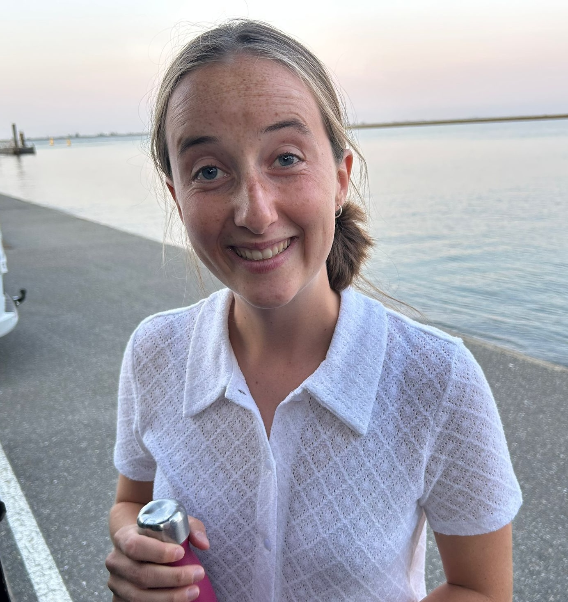

Kaat Van den Bossche
Seksuoloog en Jeugdprofessional


Welkom!
In mijn praktijk bied ik een warme plek waar je ruimte krijgt voor wat er in jou leeft. Soms zijn dat heel duidelijke vragen, soms eerder gevoelens of twijfels die nog moeilijk onder woorden te brengen zijn.
Samen gaan we op zoek naar wat jij nodig hebt, op een tempo en manier die bij jou passen.
Je bent hier welkom met vragen rond relaties, intimiteit en seksualiteit. Daarnaast ondersteun ik als jeugdprofessional kinderen, jongeren en hun gezinnen bij uitdagingen rond opvoeding, ontwikkeling of gedrag.
Seksuologie
Je kan bij mij terecht met vragen rond seksualiteit, intimiteit en relaties. Geen taboe, zonder oordeel, waar ruimte wordt gemaakt om terug in verbinding te gaan met jezelf en/of je partner(s).
Jeugdprofessional
Soms is het lastig om woorden te geven aan wat je voelt; ik ondersteun kinderen en jongeren om via spel en gesprek hun gevoelswereld weer te laten stromen.